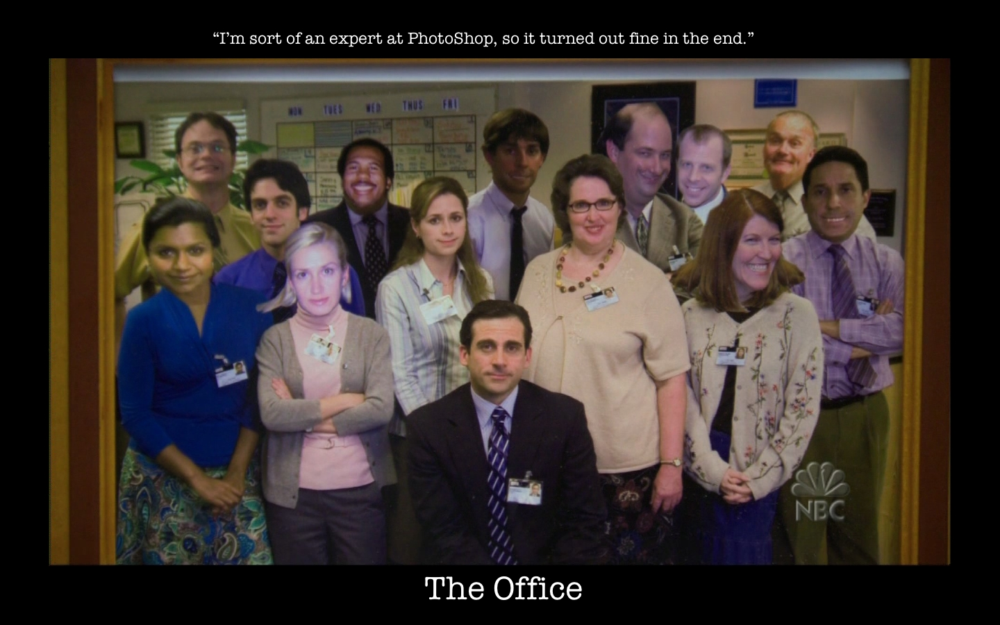
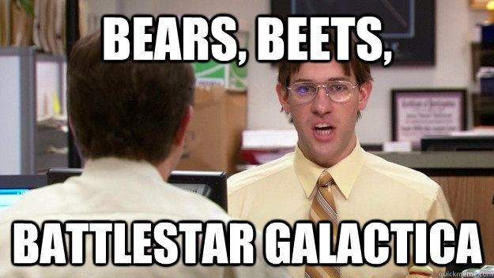
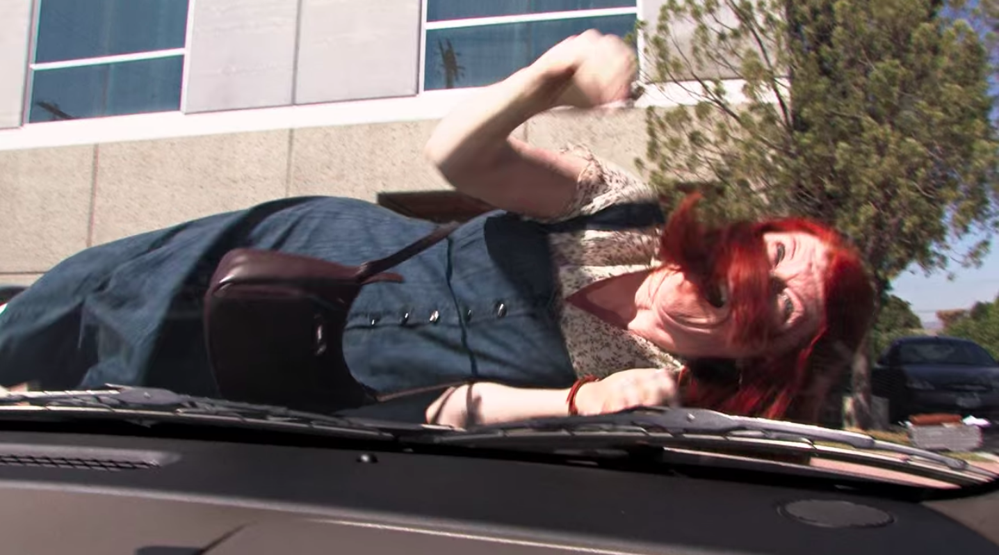
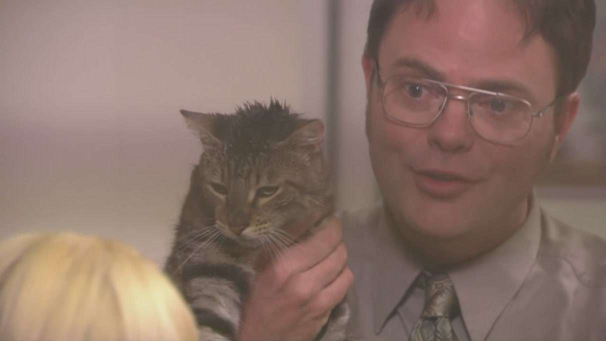
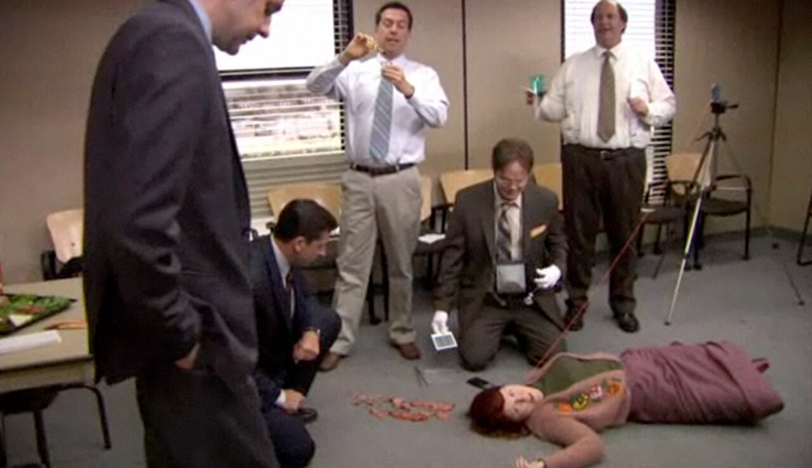
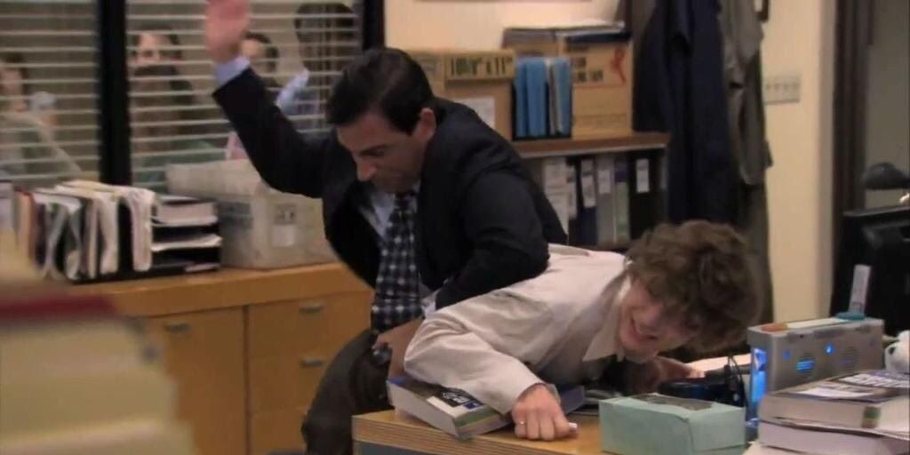
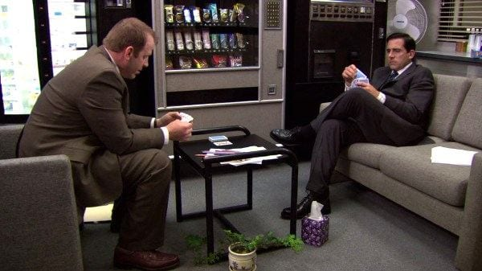
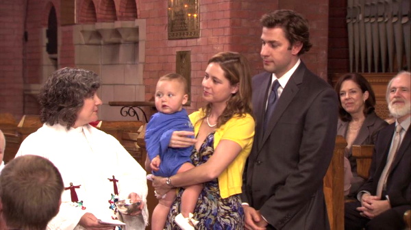

A Collection Of My Favorite Hilarious Quotes From The Office

- Well I would definitely have sex with Ryan (Michael-S2-E4-The Fire)
- Ahhhh I’m gonna kill myself. I’m going to kill myself and it’s your fault (Michael-S2-E5-Halloween)
- Oh it's okay I did learn it on the streets, on the ghetto in fact (Stanley-S2-E8-Performace Reviews)
- You look cute today Dwight (Jim-S2-E20-Drug Testing)

- Ugh what is on your face? Is that a disguise? Excuse me (Dwight/Phyllis-S2-E21-Conflict Resolution)
- Clown paint (Dwight-S2-E21-Conflict Resolution)
- Your answer to everything is to get divorced (Michael-S2-E21-Conflict Resolution)
- Don’t forget the new black man phrase I taught you (Daryl-S3-E18-The Negotiation)
- Jim, it, Roy, look out (Kevin-S3-E18-The Negotiation)
- That is not fair, he has spent hours up here at reception with you. Hours. And hours…No constantly like for years. (Kevin-S3-E19-Safety Training)
- Depression? Isn’t that just a fancy word for feeling “bummed out” (Dwight-S3-E19-Safety Training)
- Dwight you ignorant slut (Michael-S3-E19-Safety Training)

- Bears. beets. battle star galatica (Jim-S3-E21-Product Recall)

- No, Dwight. Respect. R-E-S-P-svee-T. Find out what it means to me. (Michael-S3-E22-Womens Apprecaition)
- Sometimes, the clothes at GapKids are just too flashy. So I’m forced to go to the American Girl store and order clothes for large colonial dolls.(Angela-S3-E22-Womens Apprecaition)

- I trust him, Cons, I don’t really trust him. (Michael-S3-E23-Beach Games)
- On beach day (Jim-S3-E23-Beach Games)

- Moon each other (Michael-S3-E24-The Job)
- Which I use to my advantage, when advantageous. (Andy-S3-E24-The Job)
- No Dwight I don’t care how if that’s how they consolidated power in Ancient Rome (Angela-S3-E24-The Job)
- Au natural, baby. That’s how I like ’em. Swing low, sweet chariots. (Creed-S3-E24-The Job)

Pam Beesly : I haven’t heard anything, but I bet Jim got the job. I mean, why wouldn’t he? He’s totally qualified, and smart, everyone loves him… and, if he never comes back again… that’s OK. We’re friends. And I’m sure we’ll stay friends. We just, we never got the timing right. You know? I shot him down, and then he did the same to me, and… But you know what? It’s OK. I’m totally fine. Everything is gonna be totally— [Jim walks in]
Jim Halpert : Pam. [to camera] Sorry. [to Pam] Um, are you free for dinner tonight?Pam Beesly : Yes.
Jim Halpert : All right. Then… it’s a date.
Pam Beesly : [to camera, tearing up, smiling] I’m sorry, what was the question?
(Pam/Jim-S3-E24-The Job)

- Occasionally I'll hit somebody with my car. So sue me. no, don't sue me. (Michael-S4-E1-Fun Run)
- Not a native speaker (Michael-S4-E4-Money)
- Oh Dawsons Creek (Jim-S4-E9-Dinner Party)
- They happen to speak spanish (Oscar-S4-E11-Night Out)
- You cheated on me? When I specifically asked you not to (Michael-S4-E14-Goodbye Toby)
- I once reported Oscar to the INS. Turns out he’s clean, but I’m glad I did it. (Angela-S5-E3-Business Ethics)

Jim Halpert : Do you remember what you said to me on my first day of work, just before you walked me over to my desk?
Pam Beesly : Yeah. "Enjoy this moment, because you're never going to back to this time before you met your desk-mate, Dwight."
Jim Halpert : And that's why I knew. You?
Pam Beesly : You came up to my desk, and you said, "This might sound weird, and there's no reason for me to know this, but that mixed-berry yogurt you're about to eat has expired."
Jim Halpert : That was the moment that you knew you liked me?
Pam Beesly : Yup.
Jim Halpert : Wow. Can we make it a different moment?
Pam Beesly : Nope.
(Pam/Jim-S5-E6-Launch Party)

- Dwight mercy-killed Angela's cat. It's very complicated. It's caused a lot of unpleasantness between Dwight and Angela, who are both already prone to unpleasantness. (Pam-S5-E6-Launch Party)
- I was raped (Kelly-S5-E7-Customer Survey)
- I don’t even know why I make it in such great quantities (Michael-S5-E7-Customer Survey)
- You are now sexy in your culture (Michael-S5-E8-Business Trip)
- Stanley, Stanley, Barack is president (Michael-S5-E14-Stress Relief)
- Racism is dead Stanley (Michael-S5-E15-Stress Relief Pt2)
- Well present company excluded (Jim-S5-E18-Blood Drive)
- It's time for your dental cleaning and maybe a checkup too (Kelly-S5-E18-Blood Drive)
- THE KGB WILL WAIT FOR NO ONE (Jim-S5-E18-Golden Ticket)
- Its true (Dwight-S5-E18-Golden Ticket)

- Meredith your boob is out (Oscar-S5-E26-Causal Friday)
- Too far Meredith too far (Angela-S5-E26-Causal Friday)
- Damn it Meredith where are your panties (Kelly-S5-E26-Causal Friday)
- Yo what up Cynthia? (Micheal-S6-E1-Gossip)

- No I’m just pooping you know how I be (Michael-S6-E10-Murder)
- He lives on Sesame Street dumb ass (Kevin-S6-E10-Murder)
- It's not my fault I was exposed to Harry Potter (Angela-S6-E10-Murder)
- False I did choke you with your shoelace (Dwight-S6-E10-Murder)
- Oh my god he’s making you look like such a fool (Jim-S6-E10-Murder)

- Tube city you owe me one (Michael-S6-E10-Murder)
- Dwight does not play a robot (Michael-S6-E17-Threat Level Midnight)

- You need to learn to be more professional Luke. (Michael-S7-E1-Nepotism)
- Yes of course, what is this in reference too? (Michael-S7-E1-Nepotism)
- The alternative is termination. Michael? (Gabe/Toby-Nepotism)

- The door locks from the outside, escape is impossible. Prove it (Dwight/Jim-S7-E2-Counseling)
- Apparently there is a famous Hollywood movie from the 1980’s. Beautiful girl. (Dwight-S7-E2-Counseling)
- And Julia Roberts goes, big mistake huge, I was telling, I was telling that (Andy/Kelly-S7-E2-Counseling)
- Your shirt and tie are disgusting o barfo (Kelly-S7-E2-Counseling)

- Really?! They didn’t call me. Who am I playing? (Michael-S7-E3-Andy’s Play)
- Its fun to hear Andy sing…in the appropriate setting (Pam-S7-E3-Andy’s Play)
- The democratic primary (Dwight-S7-E4-Sex Ed)
- Bye Stanley love you (Pam-S7-E6-Costume Contest)
- In case you cant read my my poker face (Gabe-S7-E6-Costume Contest)
- Fuck you Gabe (Kevin-S7-E6-Costume Contest)

- Okay this is, alright this is silly…..Nope. Nope. Nope. Nope. (Toby-S7-E7-Christening)
- Jesus is not your caterer (Angela-S7-E7-Christening)
- Fine I guess I’ll watch Suzanne’s purse and your baby! (Memaw-S7-E7-Christening)
- Alright…Travel safe Angela (Jim-S7-E7-Christening)
- Get in quick! Why quick? So it’s faster (Erin/Michael-S7-E7-Christening)
- So I want guidance, I want leadership but don’t just like boss me around. Like lead me. Lead me when I’m in the mood, to be lead. (Ryan-S7-E26-Search Committee Part 2)
- Thanks uh I’m playing a little hooky from work today (Creed-S9-E4-Work Bus)
- Does anybody know a Pete? (Andy-S9-E16-Moving On)
- Your ex girlfriend will shove them down your throat with the help of her hunky new boyfriend. So that’s fun (Andy-S9-E16-Moving On)
- Then I ordered ten American girl outfits online, it was thousands of dollars. (Phyllis-S9-E17-The Farm)
- You go to the bathroom for 45 minute and everything changes (Kevin-S9-E18-Promos)
- This is a documentary? Ohhh I always thought we were like specimens in a human zoo (Kevin-S9-E18-Promos)
- Sorry I’m mad, I don’t like losing… I thought I was going to win. (Erin-S9-E20-Paper Airplane)

- Gutenprank, yes Mose gutenprank number 3 (Mose/Jim-S9-E23–Finale)
- Are you still with Piotr (Toby-S9-E23–Finale)